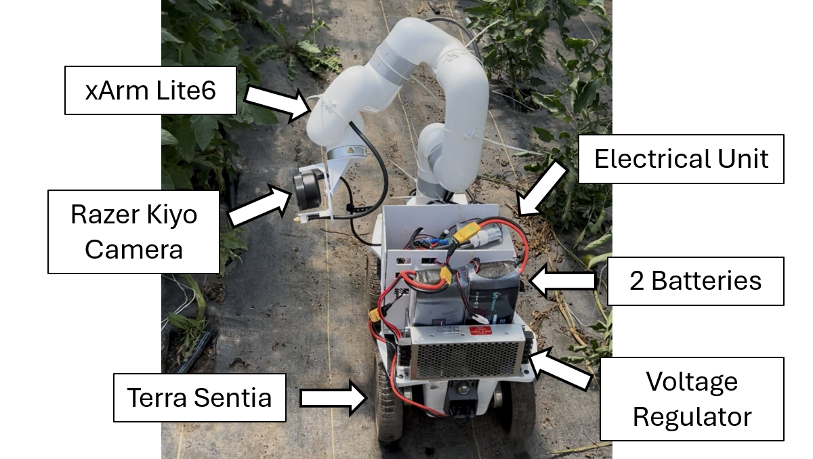

Narathip Rodwarna
Robotics Engineer | Autonomy Deployment, Validation & Perception | UIUC M.Eng. Autonomy & Robotics
I've always wanted to know how things work. As a kid I'd wonder how planes stay in the air, how cars actually run, and how ships that heavy don't sink. That curiosity is what pulled me into engineering, and it still drives me today.
Right now I'm a Robotics Field Engineer at August Robotics, deploying and debugging "Dale," our autonomous drilling robot, at hyperscale data centers across the US, where it has held 99.97% drilling accuracy over 70,000+ holes. Before this, I did my M.Eng. in Autonomy & Robotics at the University of Illinois and worked as a graduate researcher in DASLAB on an agricultural robot for an NSF-USDA funded project. Before grad school, I started my career at Toyota's R&D center, testing parts and vehicles in the lab, on the test track and out on real roads.
I'm most excited about mobile robotics, autonomy validation and perception, and especially about making robots work reliably in the real world, not just in the lab.